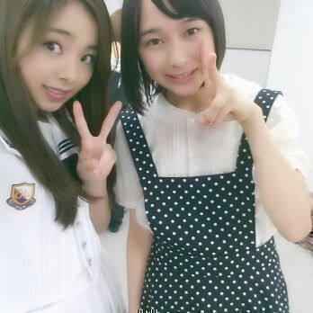
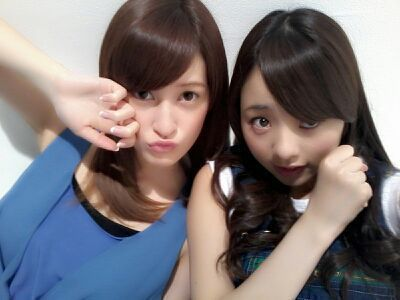

いぇーーーいっ ☆
Rottyだよぉ〜 ) ) )
ろってぃ-と２期生ちゃん 、
あやねちゃんちゃん。

はーーーいっ ！！！\(´▽`)/
昨日の晩 東京に戻って参りました〜 ！
もう ご存知のことでしょ-しょ-？？
私達 ファースト写真集を
出すことになりました ！
ひゃっふぁ〜ん\(*´ω｀*)/
嬉ぴー嬉ぴーー 。
内容や思い出話いーっぱいしたいけど
まだお楽しみだよよ。よ。よ...♪
題名の内容はねっ、
この写真撮った時に せっちゃんにね、

「このろてぃん０歳みたいだね*´ω`)/」
って言われたの。
ただそれだけなの。 おほほん♪
手グーにして むにむにしてて
赤ちゃんみたい。だと
〜まにまにむにえる〜
最近よく あにあに♪に言われる。
まにまにむにえる って！
とりあえず
Zepp liveの リハーサルが
始まりました★
終わって あにあにと駅まで帰ってたら
まひろん家にとまることになって
ちはるとかに遭遇して
そのまま ちはるも来ちゃいました！わら
とゆうことで結局
まひろ あみ ちはる ひな で
今日も 楽しい一夜を過ごすよ( 〃▽〃)
また更新します！！
おやちゅみなさい。。
皆のことも 好きやからね〜(*^^*)
のし♪